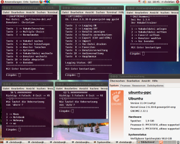
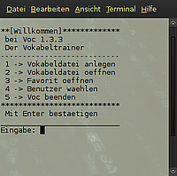
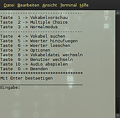
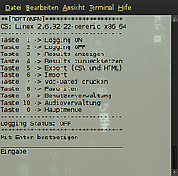

Voc
Dieser Artikel wurde für die folgenden Ubuntu-Versionen getestet:
Ubuntu 14.04 Trusty Tahr
Zum Verständnis dieses Artikels sind folgende Seiten hilfreich:
 Voc
Voc  ist ein äußerst schlanker Vokabeltrainer für die Kommandozeile. Das Shellskript enthält nur Kommandos, die in allen Linux-/Unix-Grundinstallationen vorhanden sind. Gemäss Homepage von Voc ist das Programm z.B. unter BeOS, OS X, Openmoko Freerunner-Handys, Linksys-Routern mit OpenWrt und OpenBSD lauffähig. Voraussetzung für die Nutzung ist, dass eine Bourne-Shell installiert ist. Voc ist quelloffen.
ist ein äußerst schlanker Vokabeltrainer für die Kommandozeile. Das Shellskript enthält nur Kommandos, die in allen Linux-/Unix-Grundinstallationen vorhanden sind. Gemäss Homepage von Voc ist das Programm z.B. unter BeOS, OS X, Openmoko Freerunner-Handys, Linksys-Routern mit OpenWrt und OpenBSD lauffähig. Voraussetzung für die Nutzung ist, dass eine Bourne-Shell installiert ist. Voc ist quelloffen.
Mit Voc können Vokabeln angelegt, importiert, gelöscht, gesucht, gedruckt und abgefragt (Normal- und Multiple-Choice-Modus) werden. Zusätzlich können Vokabeldateien in verschiedene CSV-Formate exportiert werden. Zur schnelleren Handhabung kann sich Voc die in "Favoriten" gespeicherten Lerndateien merken und direkt laden. Ferner können Sounds angelegt werden. Pro Wort kann für jede der beiden Sprachen je ein Synonym hinzugefügt werden. Voc kann sich verschiedene Benutzer merken.
Das Programm ist intuitiv zu bedienen und eine gute Wahl für alle, welche einen handlichen Vokabeltrainer suchen und gerne in der Shell arbeiten.
Installation¶
Das Programm ist kein Bestandteil der offiziellen Paketquellen.
Manuell¶
Hinweis!
Fremdsoftware kann das System gefährden.
Diese Seiten bieten Voc zum Download an:
Die Archivdatei voc-shellquiz-1_3_6-bash.tar.gz speichert man in einem beliebigen Ordner ab.
Verwendung¶

Ordnerstruktur¶
Im Ordner voc-shellquiz werden vier Unterordner erstellt. Allenfalls interessant für Anwender sind die beiden Ordner:
myfiles¶
Hier sind vier Beispiele von Lerndateien angelegt. Die erste davon ist beispielsweise Bayrisch-Hochdeutsch. Hier könnten weitere eigene Lerndateien abgelegt werden. Standardmäßig werden diese allerdings in einem weiteren Ordner abgelegt:
voc_x_x_x¶
In diesem Ordner befinden sich:
Die Lerndateien, welche mit einem der vielen Editoren gelesen und auch bearbeitet werden können.
Das eigentliche Voc-Skript, welches ein Bash-Skript ist. Mehr dazu findet man unter anderem auf der Seite Skripte/Bash Lokalisierung.
Ein weiterer Ordner voc-files, wo die Favoriten und exportierte Lerndateien zu finden sind.
Voc bedienen¶

Nach dem Start erscheint in der Shell folgende Auswahl:
"Vokabeldatei anlegen" - Es startet ein Assistent, der beim Anlegen einer Vokabeldatei hilft.
"Vokabeldatei öffnen" - bestehende Vokabeldatei öffnen (über Verzeichnispfad)
"Favorit öffnen" - bestehende Vokabeldatei öffnen (über ein Menü)
"Benutzer wählen" - wenn sich mehrere Anwender das Programm teilen.
"Voc beenden"
Eine Vokabeldatei anlegen¶
Wählt man "Vokabeldatei anlegen", wird man in der Shell Schritt für Schritt geführt. Man gibt der Datei zuerst einen Namen, wählt dann zwei verschiedene Sprachen und beginnt mit der Eingabe von Vokabeln. Die Bedienung ist einfach und man kommuniziert mit der Shell per Nummernauswahl.
Favoriten¶
Beim Öffnen einer mit Voc angelegten Wörterdatei muss man normalerweise jeweils den ganzen Pfad zur gespeicherten Datei von Hand eingeben. Im Abschnitt "Optionen" können zur handlicheren Nutzung Favoriten angelegt werden. Konkret heißt dies, dass man eine gespeicherte Lerndatei unter "Favoriten" ablegen kann. Im Startmenü gelangt man über die Auswahl "Favorit öffnen" zu einer Liste, wo man - wie immer in Voc - per Nummerntaste gespeicherte Lerndateien direkt laden kann.
Lernen¶

Ist eine Vokabeldatei angelegt, bekommt man eine Auswahlliste mit elf Möglichkeiten.
Für das Lernen stehen drei Optionen zur Auswahl:
"Vokabelvorschau" - hier werden die Vokabeln inklusive Übersetzungen in einer Art Slideshow angezeigt
"Multiple Choice" - aus vorgegebenen Antworten eine Antwort auswählen
"Normalmodus" - hier müssen alle Vokabeln eingegeben werden. Nach einer Auswertung, werden die Vokabeln die falsch eingegeben wurden, nochmal abgefragt. Bei einer falschen Antwort, wird die Abfrage der Vokabel so oft wiederholt, bis die richtige Übersetzung eingegeben wurde.
Optionen¶

Mit der Taste 7 kommt man ins Menü "Optionen", wo wieder per Nummerneingabe verschiedene Optionen gewählt werden können. U.a. sind das:
Export und Import von Dateien im CSV und HTML Format. Die exportierte Datei findet sich im Ordner /voc-files. Hier ein Beispiel:
/pfad/zum/ordner/voc-shellquiz/voc_1_3_3/voc-files
Drucken von Voc-Dateien: Eine Liste, welche mit "->" Symbolen die verschiedenen Sprachen abtrennt.
Ein- und Ausschalten der Logging-Funktion
Erstellen und Verwalten von Audio-Files
Anlegen und Verwalten verschiedener Benutzer
Dateiformate¶
Mit Voc erstellte Vokabeldateien werden mit der Dateiendung vvf (v = voc, v = vocabulary, f = file) abgespeichert. Das ist ein CSV_(Dateiformat). Als Standard benutzt Voc folgendes Format:
Text: Ohne Anführungsstriche
Trennzeichen: Semikolon ";"
Beispiel:
Englisch;Englisch2;Deutsch;Deutsch2
Daneben können noch folgende Text- und Trennzeichenformatierungen gewählt werden:
"Englisch","Englisch2","Deutsch","Deutsch2" Englisch,Englisch2,Deutsch,Deutsch2 Englisch<Tab>Englisch2<Tab>Deutsch<Tab>Deutsch2
Auch der Export in das HTML-Format ist möglich.
 Übersichtsseite
Übersichtsseite- Erstellt mit Inyoka
-
 2004 – 2017 ubuntuusers.de • Einige Rechte vorbehalten
2004 – 2017 ubuntuusers.de • Einige Rechte vorbehalten
Lizenz • Kontakt • Datenschutz • Impressum • Serverstatus -
Serverhousing gespendet von